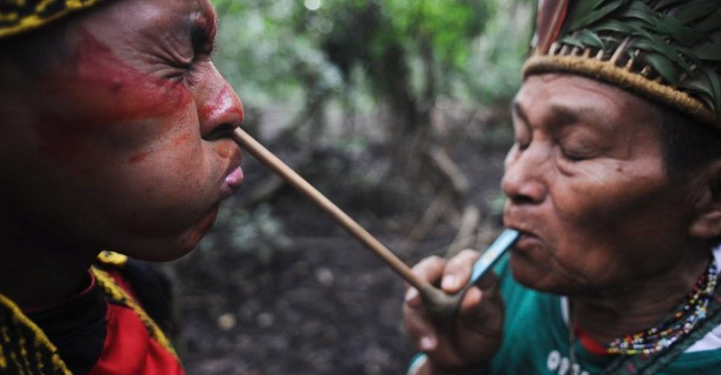
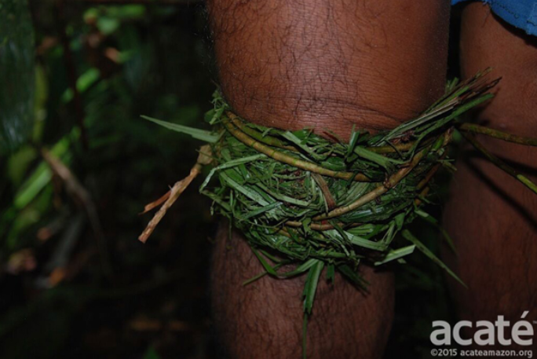

Já pensou na medicina alternativa como cura?
Os povos originários do Brasil dominavam a arte da cura através da natureza há muito tempo. Eles sempre viram a natureza como a maior curandeira, um livro vivo onde cada folha, raiz e flor guarda um segredo milenar. Vi-a como uma fonte não só para a cura de feridas e doenças, mas também para fortalecer o corpo e oferecer proteção espiritual. Esse significado tão profundo e essencial era passado de geração a geração.
A observação direta era a principal forma de aprendizado. Por exemplo, se um animal comia uma planta e ficava mais saudável ou se comportava de maneira diferente, isso era notado e transmitido como um indício de que aquela planta poderia ter propriedades curativas. Da mesma forma, os efeitos imediatos de uma planta, como sua reação ao ser ingerida ou aplicada na pele, eram analisados. Essa troca constante entre a observação da natureza e a prática de uso das plantas permitia o aperfeiçoamento do conhecimento sobre elas.
Além disso, muitos desses conhecimentos estavam profundamente ligados aos rituais espirituais. O uso das plantas não era apenas uma questão prática, mas também uma maneira de se conectar com os espíritos da floresta, que guiavam os pajés e curandeiros no uso correto das ervas. Plantas como o barbatimão (conhecido por suas propriedades cicatrizantes) ou o guaraná (que ajuda a aumentar a energia) eram vistas como presentes dos espíritos, e seu uso tinha um significado mais amplo, relacionado ao equilíbrio entre o ser humano e o mundo espiritual. Esse conhecimento se baseava na sabedoria coletiva e no respeito profundo pelas forças naturais. Por isso, era crucial que os curandeiros tivessem uma conexão direta com os espíritos da natureza para saber o momento exato de colher uma planta e como prepará-la de maneira correta, garantindo sua eficácia. O uso das ervas, então, era uma prática que não envolvia apenas o físico, mas também o espiritual, refletindo o entendimento indígena de que o corpo e o espírito são partes de um mesmo todo, interligados pelas forças da natureza.
Este site foi criado com o intuito que todos os brasileiros possam conhecer melhor a nossa história e compreender a importância da medicina alternativa e indígena. Conhecer nossas origens é fundamental para valorizar nossa cultura e construir um futuro mais consciente e conectado com nossas raízes.
Guia das Ervas
As divisões das ervas medicinais entre os povos indígenas do Brasil variam conforme cada etnia e sua visão de mundo. Em vez de classificá-las como na medicina ocidental, os indígenas as veem com base na relação entre o ser humano, os espíritos da floresta e os efeitos das plantas. Mesmo assim, algumas categorias gerais podem ser observadas.
Plantas de Cura (Nhe’e Ramo)
As Plantas de Cura (Nhe’e Ramo) são utilizadas pelos povos indígenas principalmente para tratar feridas e doenças do corpo. Elas possuem propriedades terapêuticas que ajudam na cicatrização de ferimentos, alívio de dores e no tratamento de inflamações, cada planta é escolhida de acordo com seu poder específico de curar o corpo, promovendo o equilíbrio físico e a saúde.
Barbatimão (Iwirá-puruca)
O barbatimão é uma planta amplamente utilizada pelos povos indígenas do Brasil, especialmente pelos Guarani e os Yanomami. Suas propriedades adstringentes e cicatrizantes são reconhecidas, sendo utilizada para tratar feridas, cortes e inflamações. Além disso, o barbatimão é considerado um símbolo de força e resistência, refletindo a conexão profunda entre os indígenas e a natureza.
Jaborandi (Piripiri-mirá)
O jaborandi, também conhecido como piripiri-mirá, é uma planta nativa do Brasil, encontrada principalmente na região amazônica. Suas folhas contêm um alcaloide chamado pilocarpina, que tem sido utilizado na medicina tradicional e moderna devido às suas propriedades terapêuticas.
A pilocarpina é conhecida por estimular as glândulas salivares e sudoríparas, sendo utilizada no tratamento de glaucoma e xerostomia (boca seca). Além disso, a planta possui propriedades diuréticas, sudoríficas e expectorantes, sendo utilizada no tratamento de bronquite, asma e outras afecções respiratórias.
No entanto, o uso do jaborandi deve ser feito com cautela e sob orientação médica, pois a pilocarpina pode causar efeitos colaterais como sudorese excessiva, salivação, náuseas, vômitos e bradicardia. Além disso, a planta é contraindicada para pessoas com problemas cardíacos, úlcera péptica e asma grave.
Erva-de-São-João (kawê-pyau)
A Erva-de-São-João (Hypericum perforatum), também conhecida como hipérico ou kawê-pyau, é uma planta medicinal com uma longa história de uso, especialmente na Europa. Suas flores amarelas e folhas verdes contêm compostos ativos, como a hipericina e a hiperforina, que lhe conferem propriedades terapêuticas. Tradicionalmente e modernamente, tem sido usada para aliviar sintomas de depressão leve a moderada, ansiedade, distúrbios do sono, além de promover a cicatrização de feridas e queimaduras. No entanto, seu uso requer cautela, pois pode interagir com diversos medicamentos, incluindo antidepressivos e anticoncepcionais, e causar efeitos colaterais como sensibilidade à luz solar e distúrbios gastrointestinais. Não é recomendada para mulheres grávidas, lactantes, crianças e pessoas com transtorno bipolar ou esquizofrenia. A Erva-de-São-João está disponível em diversas formas, como cápsulas, comprimidos, extratos líquidos, chás e pomadas, e seu uso deve ser orientado por um profissional de saúde qualificado para evitar complicações.
Erva-Mate (Ilex paraguariensis)
A erva-mate (Ilex paraguariensis) é uma planta nativa da América do Sul, especialmente encontrada no Brasil, Argentina e Paraguai. É amplamente conhecida por suas propriedades estimulantes e energéticas, sendo utilizada na preparação do chimarrão e do tereré, bebidas tradicionais da região. A erva-mate contém cafeína, teobromina e antioxidantes, que proporcionam benefícios como aumento da energia, melhora da concentração e propriedades antioxidantes. Além disso, a erva-mate é rica em vitaminas e minerais, como vitamina C, vitamina B1, cálcio e ferro. No entanto, seu consumo excessivo pode levar a efeitos colaterais, como insônia, nervosismo e problemas gastrointestinais. É importante moderar o consumo e evitar a ingestão excessiva de cafeína.
O vídeo acima apresenta uma visão geral sobre as plantas medicinais indígenas, destacando sua importância cultural e terapêutica. Ele explora o conhecimento ancestral dos povos indígenas sobre as ervas e suas aplicações na medicina tradicional, ressaltando a conexão entre a natureza e a saúde.
Mitos e Curiosidades
Os mitos e curiosidades sobre as ervas medicinais indígenas são parte fundamental da cultura e do conhecimento tradicional dos povos indígenas do Brasil. Esses mitos muitas vezes refletem a relação espiritual e simbólica que os indígenas têm com a natureza e as plantas, além de transmitir ensinamentos sobre o uso e os efeitos das ervas.
Um exemplo de mito é a história da origem do guaraná, uma planta nativa da Amazônia conhecida por suas propriedades energéticas. Segundo a tradição indígena, o guaraná nasceu do olho de um índio que foi transformado em estrela após sua morte. Essa história simboliza a importância do guaraná como fonte de energia e vitalidade para os povos indígenas.
Outro mito interessante é o da erva-mate, que é considerada sagrada pelos Guarani. Segundo a tradição, a erva-mate foi trazida à Terra pelos deuses e é vista como um presente divino. Os Guarani acreditam que o consumo da erva-mate fortalece os laços entre as pessoas e promove a harmonia social.
Além dos mitos, existem curiosidades fascinantes sobre as ervas medicinais indígenas. Por exemplo, muitas plantas são utilizadas não apenas para tratar doenças físicas, mas também para promover o equilíbrio espiritual e emocional. Os indígenas acreditam que a saúde do corpo está interligada à saúde da mente e do espírito, e o uso das ervas é uma forma de manter essa harmonia.
Jogo interativo
É recomendado que esteja em um computador ou notebook para melhor visualização do jogo.